/en/word/formatting-text/content/
When you're working with longer documents, it can be difficult and time consuming to locate a specific word or phrase. Word can automatically search your document using the Find feature, and it allows you to quickly change words or phrases using Replace.
Watch the video below to learn more about using Find and Replace.
[](../../../../../www.youtube.com/embed/p3Ql9y3eEyo.webm)
In our example, we've written an academic paper and will use the Find command to locate all instances of a particular word.
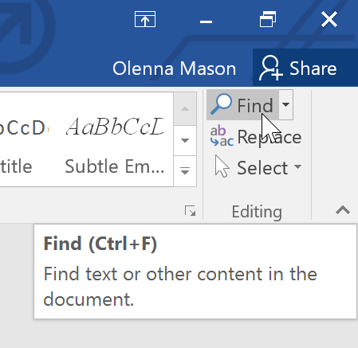
2. The navigation pane will appear on the left side of the screen. 3. Type the text you want to find in the field at the top of the navigation pane. In our example, we'll type the word we're looking for.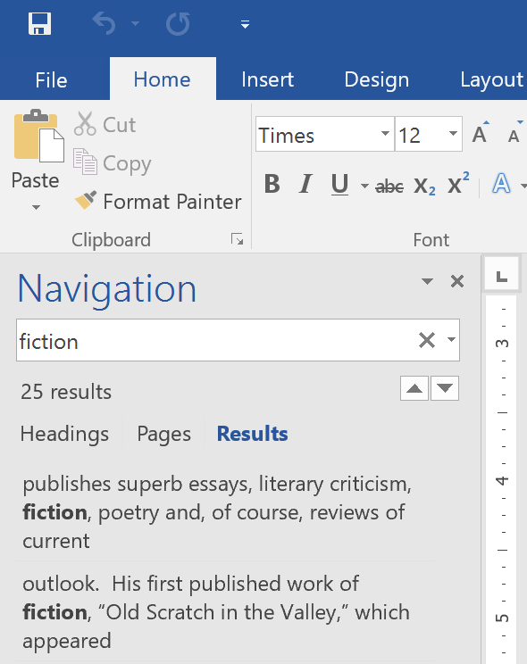
4. If the text is found in the document, it will be highlighted in yellow and a preview of the results will appear in the navigation pane. You can also click one of the results below the arrows to jump to it.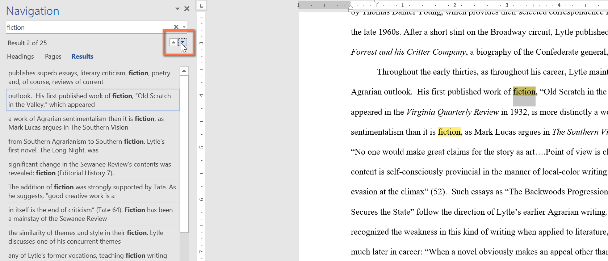
5. When you're finished, click X to close the navigation pane. The highlight will disappear.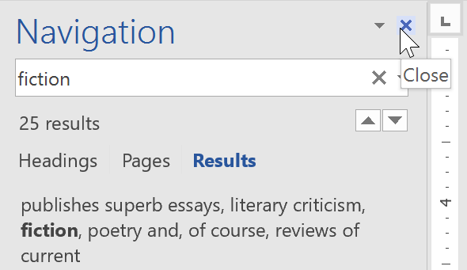
For more search options, click the drop-down arrow next to the search field.
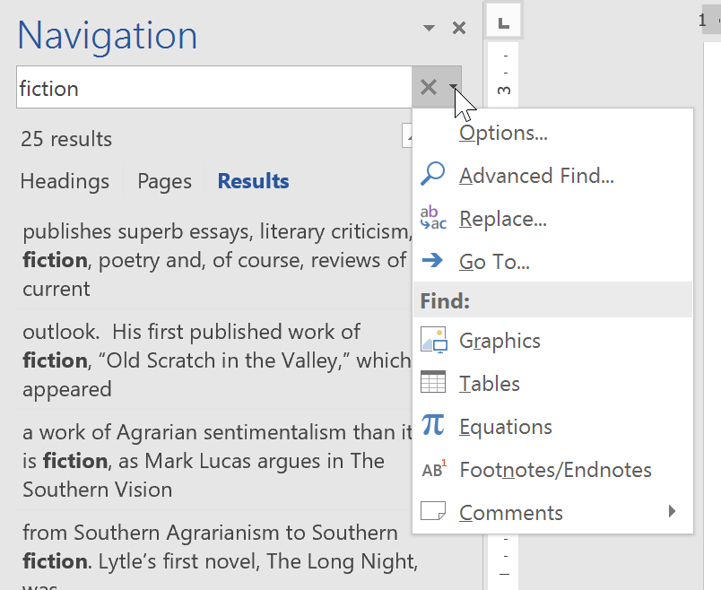
You may discover that you've made a mistake repeatedly throughout your document, like misspelling someone's name, or that you need to exchange a particular word or phrase for another. You can use Word's Find and Replace feature to quickly make revisions. In our example, we'll use Find and Replace to change the title of a magazine so it is abbreviated.
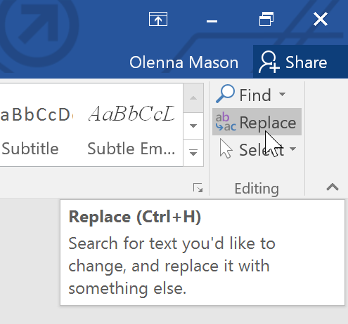
2. The Find and Replace dialog box will appear. 3. Type the text you want to find in the Find what: field. 4. Type the text you want to replace it with in the Replace with: field, then click Find Next.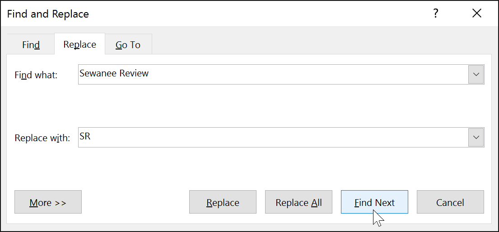
5. Word will find the first instance of the text and highlight it in gray. 6. Review the text to make sure you want to replace it. In our example, the text is part of the title of the paper and does not need to be replaced. We'll click Find Next again to jump to the next instance.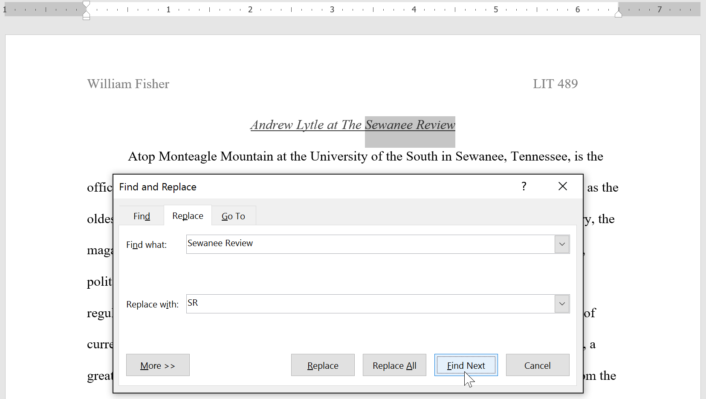
7. If you want to replace it, you can click Replace to change individual instances of text. You can also click Replace All to replace every instance of the text throughout the document.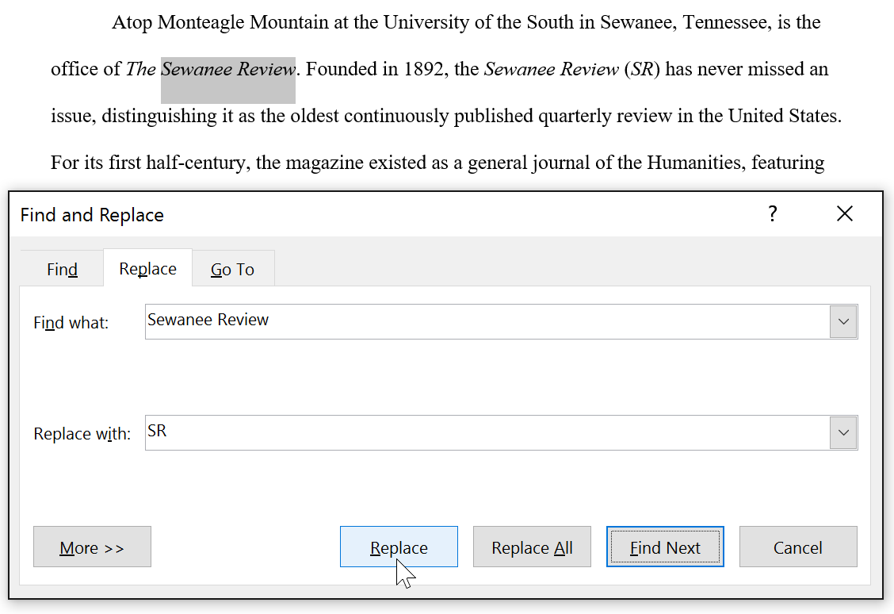
8. The text will be replaced.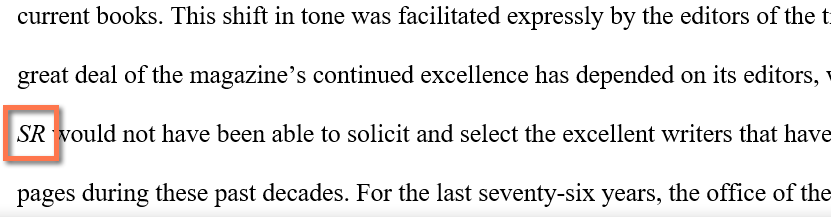
9. When you're done, click Close or Cancel to close the dialog box.For additional search options, click More in the Find and Replace dialog box. From here, you can select additional options, like matching case and ignoring punctuation.
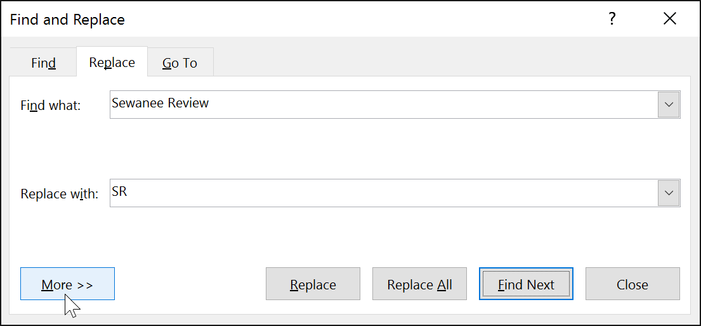
When it comes to using Replace All, it's important to remember that it could find matches you didn't anticipate and that you might not actually want to change. You should only use this option if you're absolutely sure it won't replace anything you didn't intend it to.
/en/word/indents-and-tabs/content/